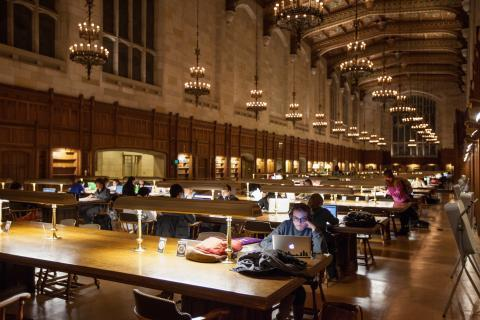
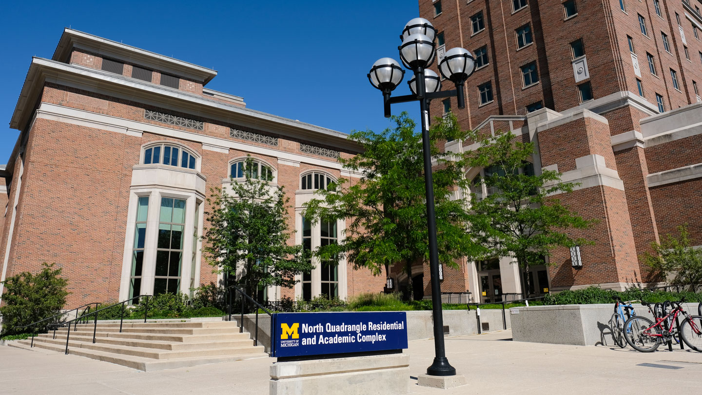

Welcome to the UMSI Student Resource Portal
Empowering Students with Resources for Academic and Personal Success.
Find what you need to excel academically, balance school and life, and access support in times of need.
Navigating life at the University of Michigan can feel overwhelming, but you're not alone. This guide is here to help you access the resources you need to thrive—whether you're finding housing, staying healthy, or studying for your next big exam. Let's make your journey as a Wolverine rewarding, balanced, and successful!

Food Pantry

CEW+

Caps

Study Spaces

First Gen

BSI Advising Resource

Tutoring

Student Life: Basic Needs
Featured Guides
- Living in Ann Arbor Explore a variety of options tailored to meet your needs. Learn more.
- Studying at UofM Discover the best spots for focused and effective studying on campus. Find your space.
- Thriving at Umich Prioritize your well-being with health and counseling services. Get care.
Upcoming Events
Stay updated with events designed to enhance your academic and social experience:
- January 21, 2025: Entrepreneurship & Innovation Pop-Up
- January 21, 2025: Business+Tech Datathon Information Session for UMSI Students
- January 22, 2025: Future of Work Panel on The Use of AI & UX
- January 22, 2025: BSI info session for U-M cross campus transfer students
- January 23, 2025: Master of Science in Information info session
- January 27, 2025: BSI info session for U-M cross campus transfer students
- January 29, 2025:UMSI Lunar New Year Celebration
- February 1, 2025: BSI Applications due for all cross-campus transfer students
Student Success Stories
Hear from Wolverines who have overcome challenges and achieved success:
"The Student Resource Portal helped me find the perfect study spot and introduced me to mindfulness resources that changed my college experience." - Pepe T., Class of 2024
"I found affordable housing and a community that made Ann Arbor feel like home, all thanks to this guide." - Maria L., Class of 2025
Stay Connected
Follow us on social media for updates, tips, and community highlights: